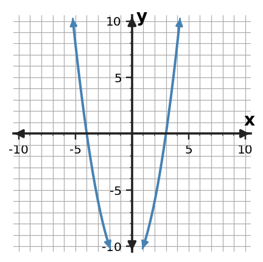
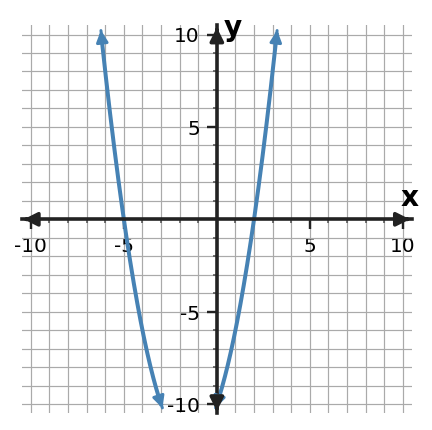

1
Factor $\displaystyle 12x^3+18x^2$ completely by first identifying the greatest common factor.
Show enough work to make your reasoning visible. Use the representations provided and interpret answers when the prompt asks.
Factor $\displaystyle 12x^3+18x^2$ completely by first identifying the greatest common factor.
Use the term-structure table to identify the greatest common factor. Then factor $8x^2+20x$ completely and verify the factored form by multiplication.
| term | coefficient | power of $x$ |
|---|---|---|
| $8x^2$ | 8 | 2 |
| $20x$ | 20 | 1 |
Factor $x^2+9x+20$ completely.
Factor $2x^2+9x+4$ completely. Organize the factor pairs of $ac$ in a product-sum table, use the pair whose sum matches the middle coefficient, and then complete the factorization.
Factor $x^2-49$ and name the special structure that makes the factorization efficient.
For $f(x)=(x+4)(x-3)$, determine the zeros and corresponding $x$-intercepts. Explain how each factor gives one intercept.
The graph below crosses the $x$-axis at two integer values. Read the intercepts and write a possible monic quadratic in factored form.

For $y=2(x-3)^2-7$, identify the form and state the key feature that can be read most directly from it.
Rewrite $$x^2-7x+12$$ in a form that most directly reveals its zeros. Name the form and state the revealed feature.
A quadratic height model is already in vertex form and the question asks for maximum height. Which quadratic form is most useful first, and why?
Show enough work to make your reasoning visible. Use the representations provided and interpret answers when the prompt asks.
Factor $x^2-8x+15$ completely.
For $f(x)=(x+2)(x-5)$, determine the zeros and corresponding $x$-intercepts. Explain how each factor gives one intercept.
Factor $\displaystyle 15x^4-25x^2$ completely by first identifying the greatest common factor.
For $y=(x+4)(x-2)$, identify the form and state the key feature that can be read most directly from it.
Factor $3x^2+11x+6$ completely. Organize the factor pairs of $ac$ in a product-sum table, use the pair whose sum matches the middle coefficient, and then complete the factorization.
Rewrite $$x^2+2x-15$$ in a form that most directly reveals its zeros. Name the form and state the revealed feature.
Use the term-structure table to identify the greatest common factor. Then factor $18x^3-12x^2$ completely and verify the factored form by multiplication.
| term | coefficient | power of $x$ |
|---|---|---|
| $18x^3$ | 18 | 3 |
| $-12x^2$ | -12 | 2 |
The graph below crosses the $x$-axis at two integer values. Read the intercepts and write a possible monic quadratic in factored form.

Factor $x^2+12x+36$ and name the special structure that makes the factorization efficient.
A quadratic revenue model is in factored form and the question asks when revenue is zero. Which quadratic form is most useful first, and why?
Show enough work to make your reasoning visible. Use the representations provided and interpret answers when the prompt asks.
For $y=3x^2-5x+8$, identify the form and state the key feature that can be read most directly from it.
Factor $\displaystyle 14x^3+21x$ completely by first identifying the greatest common factor.
Factor $\displaystyle 9x^2-25$ and name the special structure that makes the factorization efficient.
Factor $x^2+x-20$ completely.
The graph below crosses the $x$-axis at two integer values. Read the intercepts and write a possible monic quadratic in factored form.

Use the term-structure table to identify the greatest common factor. Then factor $10x^2+15x$ completely and verify the factored form by multiplication.
| term | coefficient | power of $x$ |
|---|---|---|
| $10x^2$ | 10 | 2 |
| $15x$ | 15 | 1 |
A quadratic model is in standard form and the question asks for its value at input 0. Which quadratic form is most useful first, and why?
Factor $2x^2-5x-3$ completely. Organize the factor pairs of $ac$ in a product-sum table, use the pair whose sum matches the middle coefficient, and then complete the factorization.
For $f(x)=(x+5)(x-2)$, determine the zeros and corresponding $x$-intercepts. Explain how each factor gives one intercept.
Rewrite $$x^2-6x+5$$ in a form that most directly reveals its zeros. Name the form and state the revealed feature.
Show enough work to make your reasoning visible. Use the representations provided and interpret answers when the prompt asks.
For $f(x)=(x+1)(x-6)$, determine the zeros and corresponding $x$-intercepts. Explain how each factor gives one intercept.
Factor $4x^2+4x-15$ completely. Organize the factor pairs of $ac$ in a product-sum table, use the pair whose sum matches the middle coefficient, and then complete the factorization.
Rewrite $$x^2+7x+10$$ in a form that most directly reveals its zeros. Name the form and state the revealed feature.
Factor $\displaystyle 18x^2-30x$ completely by first identifying the greatest common factor.
For $y=-(x+1)^2+9$, identify the form and state the key feature that can be read most directly from it.
Factor $x^2-10x+25$ and name the special structure that makes the factorization efficient.
Use the term-structure table to identify the greatest common factor. Then factor $21x^2-14x$ completely and verify the factored form by multiplication.
| term | coefficient | power of $x$ |
|---|---|---|
| $21x^2$ | 21 | 2 |
| $-14x$ | -14 | 1 |
A projectile equation can be rewritten before answering when it hits the ground. Which quadratic form is most useful first, and why?
Factor $x^2-3x-18$ completely.
The graph below crosses the $x$-axis at two integer values. Read the intercepts and write a possible monic quadratic in factored form.

Show enough work to make your reasoning visible. Use the representations provided and interpret answers when the prompt asks.
A rectangular expression has area $\displaystyle 18x^2+30x$. Factor the expression so the greatest common factor can be interpreted as one shared dimension.
$\displaystyle 24x^3-36x^2=12x^2(2x-k)$. Determine $k$ and verify the equivalent forms by multiplication.
Construct a monic quadratic trinomial whose factors are $(x-4)$ and $(x+7)$. Expand it, then explain how the product and sum of $-4$ and $\displaystyle 7$ appear in the trinomial.
A student begins factoring $\displaystyle 3x^2+13x+4$ by splitting $\displaystyle 13x$ into $\displaystyle 12x+x$. Complete the factorization and explain why that split is useful.
Write a quadratic expression that factors as $(x-6)(x+6)$, then name the special pattern in both expanded and factored form.
The table gives three key values of a monic quadratic. Write a possible factored equation and identify its two $x$-intercepts.
| $x$ | $f(x)$ |
|---|---|
| -3 | 0 |
| 0 | -15 |
| 5 | 0 |
The graph below shows $A(x)=(x-2)(x+6)$ and $B(x)=(x-2)(x-4)$. Use the graph and the factored equations to identify the $x$-intercept the functions share and the other $x$-intercept of each function.

You need to compare the vertices of two quadratics. Which form would you want each equation rewritten into before comparing, and what information would you read directly?
The same quadratic is written as $y=(x-2)(x-6)$ and $y=x^2-8x+12$. Give one question that is easier to answer from each form.
A model asks both when a quadratic quantity becomes zero and what its starting value is. Explain which two forms are useful for those two jobs and why.
Show enough work to make your reasoning visible. Use the representations provided and interpret answers when the prompt asks.
A student claims the GCF of $\displaystyle 16x^4+24x^3$ is $\displaystyle 4x^2$. Explain why that is not the greatest common factor and factor the expression completely.
Create a two-term polynomial whose complete factorization begins $\displaystyle 9x^2(\;\;\;)$ and whose binomial factor is $\displaystyle 2x-5$. Write both forms and verify them.
A student is deciding how to factor $2x^2+11x+5$. Use the cross-product table to choose the candidate whose outer and inner terms combine to $11x$, then state the complete factorization.
| candidate | outer term | inner term |
|---|---|---|
| $(2x+1)(x+5)$ | $10x$ | $x$ |
| $(2x+5)(x+1)$ | $2x$ | $5x$ |
| $(2x-1)(x-5)$ | $-10x$ | $-x$ |
Compare $x^2-64$ and $x^2-12x-64$. Which one has an immediate special-pattern factorization? Factor both completely.
A student tries to factor $x^2+10x+25$ by searching many factor pairs of 25. Give a more efficient structural observation and factor the trinomial.
The graph below represents $H(t)=-(t-1)(t-7)$. Identify both zeros and explain how the factors correspond to the horizontal intercepts shown on the graph.

Compare $f(x)=(x+2)(x-5)$ and $g(x)=4(x+2)(x-5)$. Explain what happens to their zeros and $x$-intercepts when the factor 4 is introduced.
A student says, “Standard form is always the best form because it is the usual way to write a quadratic.” Critique the claim with one situation where vertex form or factored form is more efficient.
Show that $y=(x-3)^2-4$ and $y=x^2-6x+5$ are equivalent by expanding. Then state one feature that is easier to see in each form.
A quadratic is $q(x)=(x+1)(x-9)$. The next question asks for its zeros, then its axis of symmetry. Use the factored form to find the zeros and reason from them to the axis of symmetry.